Fortifying Your Code
Rust's Security Arsenal
Rust provides a robust set of tools and practices to create secure software. Let's explore the key security measures that make Rust a fortress against common vulnerabilities.
Remember, while Rust provides powerful security features, it's up to us as developers to use them effectively. Stay vigilant, keep learning, and always prioritize security in your development process.

Memory Safety
- Ownership and Borrowing: Rust's ownership system prevents data races and ensures memory is always accessed safely.
- No Null or Dangling Pointers: Say goodbye to null pointer dereferences and use-after-free vulnerabilities.

Type Safety
- Strong Static Typing: Catch errors at compile-time, not runtime.
- Enums and Pattern Matching: Exhaustive matching ensures all cases are handled, preventing unexpected behavior.
Safe Concurrency
- Fearless Concurrency: Rust's type system and ownership model make concurrent programming safer and more intuitive.
- Mutex and Arc Types: Thread-safe primitives for sharing data between threads without data races.
Secure Coding Practices
- Immutability by Default: Reduce the risk of unintended state changes.
- Safe Abstraction: Create safe APIs that prevent misuse.
Third-Party Security Tools
- Cargo-audit: Scan your dependencies for known vulnerabilities.
- Rust-analyzer: IDE integration for real-time code analysis and security checks.